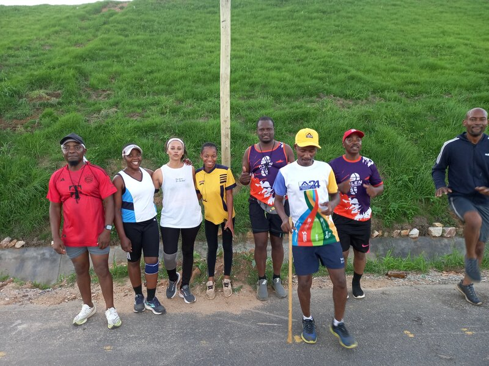

Long Slow Distance (LSD) runs are a cornerstone of endurance training for runners of all levels. Whether you're training for your first 5K or your tenth marathon, incorporating LSD runs into your training routine can significantly improve your running performance.

What Are LSD Runs?
LSD runs are exactly what they sound like - long runs performed at a slow, comfortable pace. The emphasis is on building endurance through time on your feet rather than speed. These runs typically last anywhere from 60 minutes to several hours, depending on your fitness level and training goals.
The Benefits of LSD Runs
1. Build Aerobic Base
LSD runs improve your cardiovascular system's ability to deliver oxygen to your muscles. This aerobic development is crucial for running longer distances and recovering faster between harder efforts.
2. Increase Mitochondrial Density
Running at a comfortable pace stimulates the growth of mitochondria in your muscle cells. These are the powerhouses that convert oxygen and fuel into energy, making you more efficient as a runner.
3. Strengthen Muscles and Joints
The extended time on your feet helps strengthen the muscles, tendons, and ligaments used in running. This adaptation reduces injury risk and improves your overall running economy.
4. Mental Toughness
Long runs teach you to push through fatigue and discomfort, building the mental resilience needed for race day.
5. Fat Adaptation
At lower intensities, your body learns to use fat as fuel more efficiently, preserving precious glycogen stores for when you need them most.
How Slow Should You Go?
The ideal pace for LSD runs is one where you can maintain a conversation comfortably - often called the "conversational pace." This typically corresponds to:
- 60-75% of your maximum heart rate
- 1-2 minutes per kilometer slower than your race pace
- A perceived effort of 5-6 out of 10
Don't worry if this feels too slow at first. Remember, the goal is to build endurance, not speed.
Incorporating LSD Runs at Glen Striders
At Glen Striders, we embrace LSD runs as part of our Saturday long run sessions. These runs are perfect for:
- Runners building up to their first race
- Marathon and half-marathon training
- Recovery between harder training cycles
- Social running with club members of all paces
Our Saturday long runs provide a supportive environment where you can focus on time on your feet without the pressure of keeping a specific pace. With runners of all levels, you'll always find someone running at your pace.
Tips for Your LSD Runs
- Start conservatively: Begin with distances you can comfortably complete
- Stay hydrated: Carry water or plan routes with water fountains
- Fuel properly: For runs over 90 minutes, consider taking energy gels or snacks
- Listen to your body: If something hurts, slow down or stop
- Enjoy the journey: Use this time to explore new routes, listen to music, or catch up with fellow runners
Join Us
Every Saturday, Glen Striders meets for our weekly long run. Whether you're running 5K or 35K, there's a group for you. Come experience the benefits of LSD running with our supportive community!
Remember, in running as in life, sometimes the slow and steady approach wins the race. Happy running!